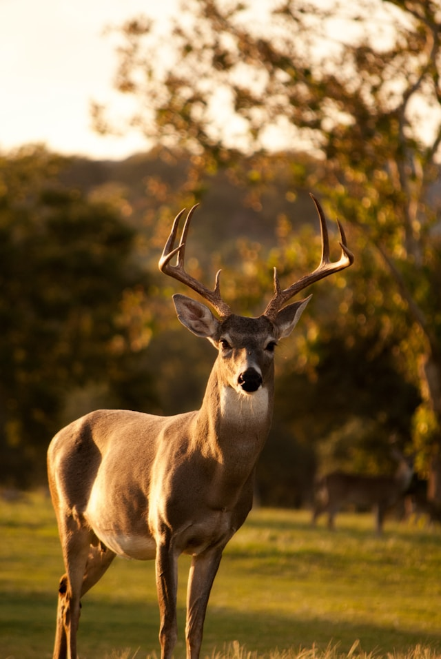

Welcome to the search tab. Here you can enter any country's name and find the corrisponding animals that can be hunted in that country or region.
(Note, this is constantly being updated so if anything is missing or incorrect, please email cop21006@byui.edu)
USA
White-tailed Deer (Odocoileus virginianus)
Photo by Laura College on Unsplash